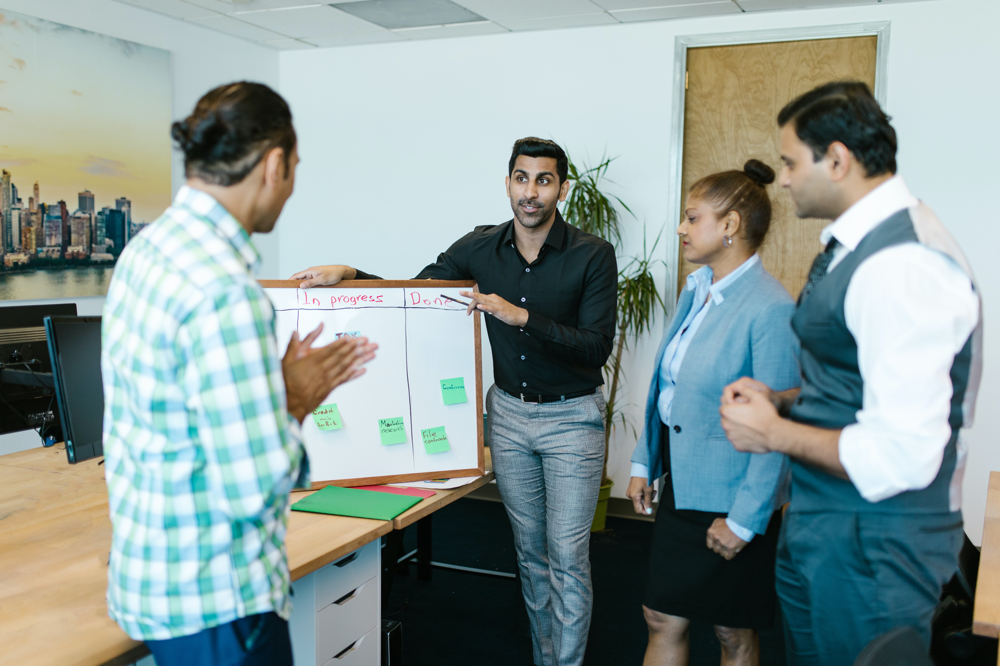

We are a passionate team dedicated to making a difference in the lives of those in need. Our mission is to fight hunger and reduce food waste by connecting surplus food from restaurants, grocery stores, and individuals with local organizations that distribute it to people in need.
Every day, we work tirelessly to collect, sort, and distribute food to ensure that no one goes to bed hungry. With the support of our amazing volunteers and generous donors, we have been able to make a significant impact in our community.
At the heart of our organization is the belief that everyone deserves access to nutritious food. We strive to create a more equitable society where no one is left behind.
"Together, we can make a difference, one meal at a time."
